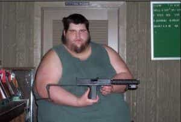
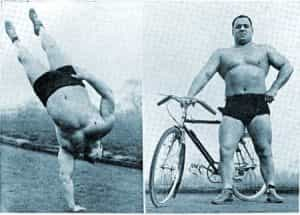

< < < Back
When It’s Okay To Listen To Fat People For Fitness Advice – Return Of Kings
In addition to my interests in general physical fitness, I also like to consider myself something of an outdoorsman. While I do not profess to be any sort of an expert, a combination of a few years in the Boy Scouts—before the organization got completely neutered—and my parents showing me these activities has given me a lifelong interest in camping, hiking, fishing, and other woodsy hobbies.
Since woodcraft has become somewhat popular in recent years—indeed, you can hardly swing your arm without hitting five “preppers”—this has prompted me to ask a question that has been nagging me about alleged survivalists for quite a while:
Why are so many of these people so goddamn fat?
While having a small layer of fat is likely a benefit in a survival situation (indeed, ancient Roman Legionnaires would cultivate an extra 10-15 pounds of fat on their bellies in case they were lost without food), it seems pretty obvious to me that carrying a debilitating amount of flab on your stomach would only hurt your chances of survival. In other words, I have yet to see evidence of a Legion that encouraged its men to be so out of shape that they were incapable of marching more than 100 cubits before dying of heart attacks.
Something that is impressed upon you in the Scouts is the “rule of 3”: you can survive 3 minutes without oxygen, 3 hours without warmth and shelter, 3 days without water, 3 weeks without food. And from there you have the Maslow Hierarchy of Needs and so on and so forth. The stress of increased body weight, labored breathing, lowered stamina, lowered circulation, higher body heat and a higher degree of perspiration probably doesn’t help that whole “retain oxygen and water” thing, and probably negates the mild advantages one has in the other two categories (I admit that I am just conjecturing here, I don’t believe there have been any studies involving dumping people of various girths into the forest with no supplies. If there have been, please correct me). Clearly, in this case, being obese would be a major negative.
This started a train of thought in my mind: Was there any case where a fat person could give legitimate advice on physical activity?

I see idiots like this in sporting goods stores far too often
Function Over Form
While this problem is most notable in outdoors related fields (at least in my experience), I have noted that in other types of physical endeavors you will sometimes find people who appear to be out of shape giving advice on fitness. And while in an overwhelming majority of the time these people can be ignored, there are times where one has to put forth the age-old “function over form” argument. This article will try to posit a few instances when you can ignore your gut instinct and take Fatty’s advice.
The first instance is if you can prove that his affliction is, in fact, glandular or genetic. Certainly there are overweight medical doctors, who would obviously know what a proper diet is like. And while it is not likely that all of them have glandular issues, if you can prove that this is the case, his advice may be worthwhile.
Secondly, while the stereotype of fat people with overinflated senses of self-worth is one that is oftentimes founded in reality, if he or she (and by that I almost always mean “he”) can truly function despite his (rotund) form, then his advice can be considered to be even greater than that of a trainer with a trim physique. Speaking hypothetically, if you were to find a fat person capable of performing, say, gymnastics at an Olympic level, I would legitimately say that his advice would be worth far more than anything I could give, as the muscular strength and endurance necessary to perform at a high level with such ponderous weight would be, speaking non-hyperbolically, Herculean.

In a much more realistic context, I would also posit myself as a mild example of this phenomenon—while I am not remotely what you would call “obese”, I freely admit that I am on the smaller side of “burly”, and could likely stand to trim down 10-15 pounds—having a day job and bills to pay means that I can’t be as lean as I was when I was a college kid walking several miles a day. However, I am still capable of performing every exercise and technique that I instruct my readers on—hence why I will always use pictures of myself unless I am incapable of doing so for reasons that will always be explicitly stated.
Thirdly, somebody might have been a physical specimen in their youth, but have gotten out of shape in their old age-their body of knowledge is still formidable, and they are still worth deferring to in questions of technique and experience. This can be observed in former athletes-turned-trainers such as many World’s Strongest Man competitors after their competitive days are past.
And finally, some sports do indeed require a bigger physique—namely, sports that require quick exertions of maximal strength such as Olympic weightlifting. To put it bluntly, the strongest men in the world (i.e.: the heavyweight class of strength sports) are not men that are going to be running marathons as well. Lifting heavy weights above your head will create a thick, heavily muscled midsection without doing any supplementary work. In addition to this, their workouts require an enormous caloric intake. There is also some theorizing that having an extra layer of fat on top of the muscles also provides a layer of cushion for the joints when lifting large amounts of weight.

Ignore that this fellow failed his lift.
Conclusion
In general terms, I always advocate the state of being strong rather than looking strong, so the first way to critique a fitness trainer is to see if he is capable of practicing what he preaches. More specifically, the type of training that you are seeking will greatly affect your assessment of the person in question.
So, I will state the blindingly obvious: most occasions where a person appears fat and out of shape, that person is somebody who has no business giving fitness advice. But if you keep an open mind, and put them to the test, you just might find a proverbial “diamond in the rough.”
Read More: Ancient Sparta Showed That Women’s Rights Are A Function Of The Economy